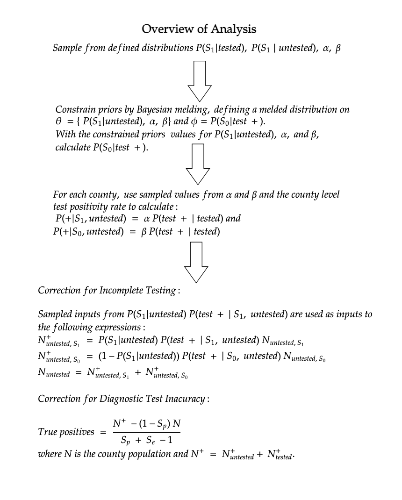

Chapter 2 Background
2.2 Bayesian Melding
2.2.1 Theoretical Background for the Approach
The Bayesian melding approach was proposed by Poole et al. (Poole & Raftery, 2000).
The Bayesian melding approach enables us to account for both uncertainty from inputs and outputs of a deterministic model. The initial motivation for the approach was to study the population dynamics of whales in the presence of substantial uncertainty around model inputs for population growth (Poole & Raftery, 2000). However, the framework provided by Poole et al. can applied in any circumstance where we have uncertainty around some quantities \(\theta\) and \(\phi\) where there is a deterministic function \(M:\theta \to\phi\). Due the utility of Bayesian melding in various contexts, since this deterministic model \(M\) could take on a wide range of forms, the approach has since been applied in various fields, including urban simulations (Ševčíková, Raftery, & Waddell, 2007), ecology (Robson, 2014), and infectious disease (Powers et al., 2011).
At this point, we can define how Bayesian melding works. Let \(M: \theta \to \phi\) be the deterministic model defined by the function relating a vector of input parameters \(\theta\) to an output vector \(\phi\), and suppose we have a prior on \(\theta\) denoted \(q_1(\theta)\) and a prior on \(\phi\) denoted \(q_2(\phi)\).
However, note that we actually have two distinct priors on \(\phi\). There is the prior formed by the distribution induced on \(\phi\) by the prior for \(\theta\) and the function \(M\), where we denote this induced prior \(q^*_1(\phi)\) . However, we also have the existing prior \(q_2(\phi)\). These priors are informed by different sources of information, but often it is useful to incorporate these multiple sources of information into our estimates. To do so, we need to combine the distributions for \(q^*_1(\phi)\) and \(q_2(\phi)\) to create a pooled distribution.
Multiple pooling strategies exist for distinct distributions, but one requirement for a Bayesian analysis is that the distribution should be independent of the order in which the prior is updated and the combining of the prior distributions. That is, updating the prior distributions using Bayes’ theorem and then combining distributions should yield the same result as combining distributions and then updating this combined distribution; pooling methods that have this property are deemed externally Bayesian. Logarithmic pooling has been shown to be externally Bayesian under some conditions, which are likely to hold in most settings. Furthermore, logarithmic pooling has actually been shown to be the only pooling method where this holds (Genest et al., 1986).
If \(M^{-1}\) exists, we can write this induced prior \(q_1^*(\phi) = q_1(M^{-1}(\phi)) |J(\phi)|\). This result follows from the fact \(M(\theta) = \phi\), so we apply a change of variables to obtain the distribution of \(\phi\) from the distribution of \(\theta\)
In practice, \(M^{-1}\) rarely exists exists since \(\theta\) is often of higher dimensionality then \(\phi\), in which cases \(M\) is not invertible. This means we generally sample from \(q^*_1(\phi)\) without acquiring its analytical form.
2.2.2 Bayesian Melding Applied to COVID-19 Misclassification
For the deterministic model of interest in this work, we define $= $ and $= $. Then, \(M: \theta \to \phi\) is where \(M=\). This model is deterministic because once we have values of \(\theta\), we can compute \(\phi\) directly via the laws of probability (REFERENCE TO SECTION WHERE I SHOW THIS DERIVATION).
With known inputs \(\theta = \{P(S_1|tested, \alpha, \beta)\), the distribution of \(P(S_0|test+)\) is fully specified. There is uncertainty about each of these parameters, but there is a higher level of evidence for \(P(S_0|test +)\). Thus, constraining the prior distributions for \(\alpha,\beta,P(S_1|tested)\) to be in accordance with \(P(S_0|test+)\) incorporates this additional information.
The probability \(P(S_0|test +,untested)\) represents the asymptomatic rate of COVID-19, a value of substantial interest over the course of the pandemic. As a result, numerous studies have sought to estimate this value, and multiple meta-analyses have produced concordant estimates (LIST THESE META-ANALYSES HERE).
Applying the original implementation to 2021, the framework is as follows.
